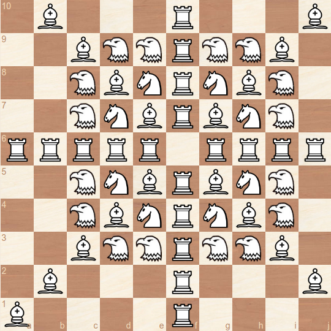
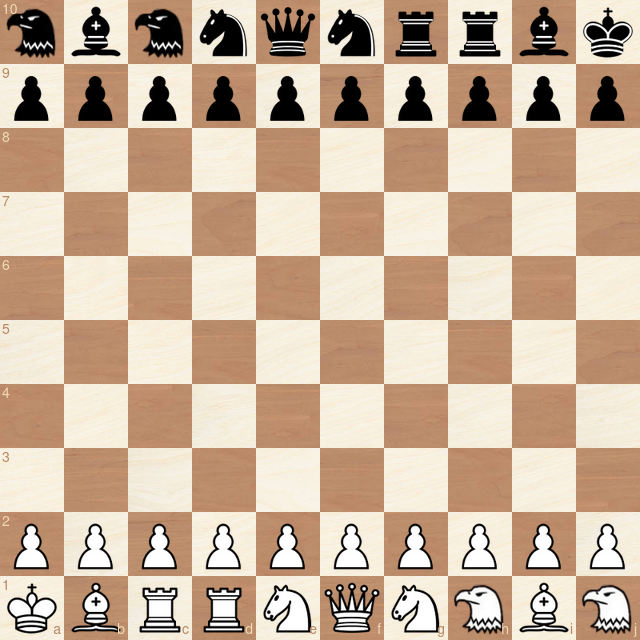
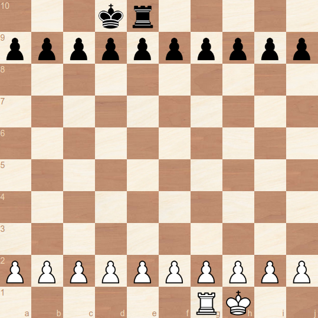
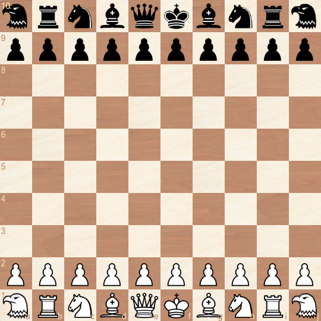

Berlin Random Chess
Less About Breaking A Wall 😱
More about storming a bunker ☠️
Berlin Random Chess (BR) is a chess variant that is closely related to classical chess and promotes razor sharp play that will expand your tactical skills nicely 😎 No opening theory required 🤗
Rules
What happens if the design principles of chess are applied to 10x10? Only three adjustments are needed: The next logical piece, an expanded start position and faster pawns. Will it work?
Board
The board is extended to 100 (10x10) squares. The files are labeled with the letters a-j, the ranks with the numbers 1-10. The lower right square of the board is black.
Eagle
One new piece is introduced. The eagle is basically a "big knight" and the logical next twin piece after bishop, knight and rook. It is complementary to these pieces. Means, it covers only squares that are not covered by them.
While the knight is a leaper that reaches all squares in a two square distance that cannot be reached by rook or bishop, the eagle has the same ability for the squares in a three square distance. The following diagram shows how it fits the picture:

Pawns
The pawns are modified as follows:
They can move up to three steps forward when placed the initial square.
Up to two steps forward when placed on the third, fourth or fifth rank.
One step forward when placed on the sixth rank or higher.
This means a pawn can reach the promotion field within five moves, which is the same number of moves as in classical chess:

En passant capturing is possible each time a pawn passes an enemy pawn by moving more than one square forward in one move:

Setup
The castling rule is replaced by the rule that the kings are always start on the first and the last square of the board. The white pieces are randomly placed on the first rank and mirrored for black in a point symmetric fashion. Bishops obviously with different square colors. An example:

Note: An eagle can't make the first move.
Notes
BR incorporates the following design elements of classical chess:
- Two single pieces: The key piece and the strongest piece. The latter has the same move pattern as the key piece but with unlimited range.
- Three (four) pairs of twin pieces that are complementary to each other.
- Pieces with ambiguous routes to their destination squares (knight, eagle) can move directly to these squares regardless if one or all routes are blocked.
- Pawns get slower once they pass a certain rank number.
- The game is played on a square board.
It differs from 8x8 regarding the piece value distribution
In classical chess the number of equally valued pieces consequently decreases with the piece value: Eight pawns, four pieces worth three pawns, two pieces worth five pawns, one piece worth nine pawns. The big board has four light pieces worth three (10x10) pawns but four heavy pieces worth five pawns as well.
Some estimations regarding the game dynamics:
Upvaluing the pawns by making them faster seemed necessary to keep the spirit of the original game that includes fast confrontation and a broad spectrum of possibilities for piece sacrifices.
The eagle might be about as valuable as a rook (my own estimation).
10x10 should faciliate gambits and sacrifices in general, since one pawn unit represents a lower fraction of the complete material stock.
Chances for an asymmetrical material distribution - one of the most tension creating features in classsical chess - are increased as well.
The knight obviously suffers from longer routes on the bigger board, but controls on average more squares than in classical chess.
The king might be the only piece that is less powerful on the bigger board.
Placing the kings in diametral opposition is a very natural alternative to castling which gives the same benefits - king safety and improved piece coordination - but is much better suited to introcude piece shuffling to avoid opening theory. As opposed to Chess960, BR always delivers setups that allow a fluent development of the position.
Giving the eagle a first move block is necessary, since in some setups immediate mate threats could lead to a won position for white.
As a mere view on a random setup suggests, BR promotes a playing style that prefers energy over matter - and goes hand in hand with a much stronger focus on the king. The audience will like it 💥
History
Before developing a chess version for the 10x10 board, I experimented with a point symmetric setup for the 8x8 board. Engines can play this out of the box without reconfiguration. You still can find sample games on chess360.net.
The 8x8 version with the kings placed on h1 and a8 is described as Corner Chess or Kings Corner Chess on several websites.
The big board concept was developed by me and derived from first principles. However, most elements are (obviously) not new, only the combination is.
The concept of extending the b, n, r line with the next twin piece was used in
Falcon Chess, credited to George Duke, resulting in a 10x8 board, a non-leaping version of the eagle called falcon and a "r, n, b, f, q, k, f, b, n, r" setup.
In the fairy chess universe, the eagle is traditionally named bison and has apparently been used as early as 1974. However, the main problem here is that all pieces need a distinct initial for the game notation. "B" for bison would conflict with "B" for bishop.
"Bird" and "Kestrel" are choices that fail for the same reasons. "Falcon" was the initial choice of the author but is already used for the non-leaping version of the piece (see above).
The 3, 2, 1, 1, 1 pawn movement might be a completely new approach.
I originally developed a 10x10 version of classical chess named ChessXp which follows the same rules, but with the following castling rule and start position:


You can find the whole spec here:
https://www.chessvariants.com/rules/chessxp
Lawyers
Game rules, as abstract ideas or methods of organizing human activity, are generally not eligible for copyright protection or patents.* And chess is for the community anyway. So just for clarification:
Berlin Random Chess is common heritage of mankind, as chess is. So use it as you want. But I don't complain if you give credit to the author 🗿
------------------------------
By
Ulrich Schwekendiek
Berlin
broulis@gmx.de
2019-2023
* However, copyright applies to a specific verbalization of the game rules, which is considered to be a literary work. So, if you use this paper without major modifications, you should put my name under it. Thank you ❤️